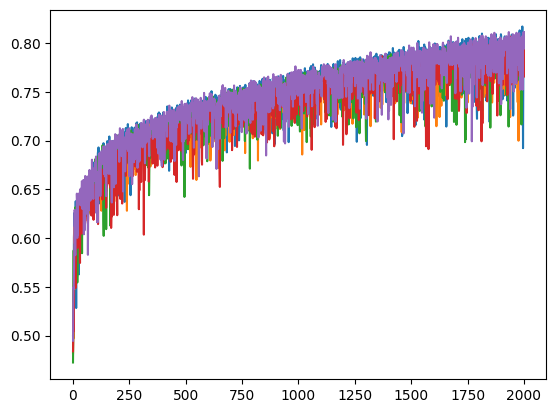

# import packages
import tensorflow as tf
from tensorflow import keras
from keras import regularizers
import tensorflow_docs as tfdocs
import tensorflow_docs.modeling
import pandas as pd
import numpy as np
from collections import Counter
import matplotlib.pyplot as plt
from sklearn.preprocessing import LabelBinarizer
from sklearn.preprocessing import StandardScaler
from sklearn.model_selection import StratifiedKFoldEvaluating deep learning models using cross validation
0.1 Evaluating deep learning models using cross validation
In [2]:
# Data
df = pd.read_csv("/Users/mauropazmino/Documents/Learning/Deep_learning_tensor/data/MIRS_temperature_vs_age_20241014.dat", sep="\t")In [3]:
# Extract features and labels
X = np.asarray(df.iloc[:, 15:-1])
y = np.asarray(df.iloc[:,0])
from imblearn.under_sampling import RandomUnderSampler
rus = RandomUnderSampler(random_state=0)
X_resampled, y_resampled = rus.fit_resample(X, y)
print(sorted(Counter(y_resampled).items()))
# Change the labels into 0 or 1
lb = LabelBinarizer()
y_binary = lb.fit_transform(y_resampled)[('AC', 1724), ('AG', 1724)]sss = StratifiedKFold(n_splits=5,
shuffle=True,
random_state=123)
# define the callbacks
def get_callbacks(name):
return [
tfdocs.modeling.EpochDots()
]histories = {}
for i, (train_index, test_index) in enumerate(sss.split(X_resampled, y_binary)):
print(f"\nFold {i}:")
keras.backend.clear_session()
input_shape = [1796,]
model = keras.Sequential()
model.add(keras.layers.Input(shape=input_shape))
model.add(keras.layers.Dense(500, activation='relu'))
model.add(keras.layers.Dense(1, activation='sigmoid'))
model.compile(loss='binary_crossentropy', optimizer='adam', metrics=['accuracy'])
histories[f"fold{i}"] = model.fit(x=X_resampled[train_index], y=y_binary[train_index], epochs=2000, batch_size=250, validation_data=[X_resampled[test_index], y_binary[test_index]],verbose=0,callbacks=get_callbacks('model_baseline'))
Fold 0:
Epoch: 0, accuracy:0.5004, loss:0.7859, val_accuracy:0.5000, val_loss:0.7151,
....................................................................................................
Epoch: 100, accuracy:0.6302, loss:0.6369, val_accuracy:0.6261, val_loss:0.6385,
....................................................................................................
Epoch: 200, accuracy:0.6925, loss:0.5858, val_accuracy:0.6826, val_loss:0.5977,
....................................................................................................
Epoch: 300, accuracy:0.6958, loss:0.5760, val_accuracy:0.6290, val_loss:0.6426,
....................................................................................................
Epoch: 400, accuracy:0.7288, loss:0.5394, val_accuracy:0.7000, val_loss:0.5660,
....................................................................................................
Epoch: 500, accuracy:0.7194, loss:0.5430, val_accuracy:0.6870, val_loss:0.5789,
....................................................................................................
Epoch: 600, accuracy:0.7360, loss:0.5223, val_accuracy:0.6870, val_loss:0.5534,
....................................................................................................
Epoch: 700, accuracy:0.7509, loss:0.5021, val_accuracy:0.7101, val_loss:0.5307,
....................................................................................................
Epoch: 800, accuracy:0.7426, loss:0.5058, val_accuracy:0.7333, val_loss:0.5299,
....................................................................................................
Epoch: 900, accuracy:0.7571, loss:0.4992, val_accuracy:0.6841, val_loss:0.5768,
....................................................................................................
Epoch: 1000, accuracy:0.7596, loss:0.4885, val_accuracy:0.7145, val_loss:0.5191,
....................................................................................................
Epoch: 1100, accuracy:0.7774, loss:0.4740, val_accuracy:0.7435, val_loss:0.5232,
....................................................................................................
Epoch: 1200, accuracy:0.7574, loss:0.4801, val_accuracy:0.7319, val_loss:0.5226,
....................................................................................................
Epoch: 1300, accuracy:0.7455, loss:0.5106, val_accuracy:0.7464, val_loss:0.4971,
....................................................................................................
Epoch: 1400, accuracy:0.7868, loss:0.4572, val_accuracy:0.7623, val_loss:0.4917,
....................................................................................................
Epoch: 1500, accuracy:0.7621, loss:0.4860, val_accuracy:0.7536, val_loss:0.4856,
....................................................................................................
Epoch: 1600, accuracy:0.7737, loss:0.4624, val_accuracy:0.7420, val_loss:0.4850,
....................................................................................................
Epoch: 1700, accuracy:0.7857, loss:0.4510, val_accuracy:0.7246, val_loss:0.5049,
....................................................................................................
Epoch: 1800, accuracy:0.7817, loss:0.4492, val_accuracy:0.7696, val_loss:0.4647,
....................................................................................................
Epoch: 1900, accuracy:0.7524, loss:0.5048, val_accuracy:0.7464, val_loss:0.4772,
....................................................................................................
Fold 1:
Epoch: 0, accuracy:0.4819, loss:0.7814, val_accuracy:0.5000, val_loss:0.7579,
....................................................................................................
Epoch: 100, accuracy:0.6599, loss:0.6188, val_accuracy:0.6609, val_loss:0.6150,
....................................................................................................
Epoch: 200, accuracy:0.6860, loss:0.5942, val_accuracy:0.6957, val_loss:0.5802,
....................................................................................................
Epoch: 300, accuracy:0.6900, loss:0.5743, val_accuracy:0.6609, val_loss:0.6006,
....................................................................................................
Epoch: 400, accuracy:0.7016, loss:0.5613, val_accuracy:0.7174, val_loss:0.5520,
....................................................................................................
Epoch: 500, accuracy:0.7226, loss:0.5387, val_accuracy:0.7391, val_loss:0.5370,
....................................................................................................
Epoch: 600, accuracy:0.7281, loss:0.5275, val_accuracy:0.7275, val_loss:0.5403,
....................................................................................................
Epoch: 700, accuracy:0.7408, loss:0.5179, val_accuracy:0.7449, val_loss:0.5244,
....................................................................................................
Epoch: 800, accuracy:0.7404, loss:0.5070, val_accuracy:0.7522, val_loss:0.5268,
....................................................................................................
Epoch: 900, accuracy:0.7505, loss:0.5084, val_accuracy:0.7580, val_loss:0.5095,
....................................................................................................
Epoch: 1000, accuracy:0.7502, loss:0.5045, val_accuracy:0.7087, val_loss:0.5446,
....................................................................................................
Epoch: 1100, accuracy:0.7165, loss:0.5448, val_accuracy:0.7652, val_loss:0.5109,
....................................................................................................
Epoch: 1200, accuracy:0.7386, loss:0.5124, val_accuracy:0.7420, val_loss:0.5228,
....................................................................................................
Epoch: 1300, accuracy:0.7679, loss:0.4754, val_accuracy:0.7696, val_loss:0.4937,
....................................................................................................
Epoch: 1400, accuracy:0.7451, loss:0.4951, val_accuracy:0.7739, val_loss:0.4920,
....................................................................................................
Epoch: 1500, accuracy:0.7803, loss:0.4610, val_accuracy:0.7913, val_loss:0.4781,
....................................................................................................
Epoch: 1600, accuracy:0.7857, loss:0.4520, val_accuracy:0.7899, val_loss:0.4705,
....................................................................................................
Epoch: 1700, accuracy:0.7806, loss:0.4511, val_accuracy:0.7768, val_loss:0.4811,
....................................................................................................
Epoch: 1800, accuracy:0.7313, loss:0.5127, val_accuracy:0.7478, val_loss:0.5045,
....................................................................................................
Epoch: 1900, accuracy:0.7962, loss:0.4383, val_accuracy:0.7913, val_loss:0.4581,
....................................................................................................
Fold 2:
Epoch: 0, accuracy:0.4724, loss:0.7904, val_accuracy:0.5000, val_loss:0.7427,
....................................................................................................
Epoch: 100, accuracy:0.6610, loss:0.6081, val_accuracy:0.6580, val_loss:0.6265,
....................................................................................................
Epoch: 200, accuracy:0.7052, loss:0.5747, val_accuracy:0.6884, val_loss:0.6050,
....................................................................................................
Epoch: 300, accuracy:0.7034, loss:0.5712, val_accuracy:0.6739, val_loss:0.6317,
....................................................................................................
Epoch: 400, accuracy:0.7099, loss:0.5529, val_accuracy:0.6986, val_loss:0.5972,
....................................................................................................
Epoch: 500, accuracy:0.7110, loss:0.5522, val_accuracy:0.7101, val_loss:0.5723,
....................................................................................................
Epoch: 600, accuracy:0.7273, loss:0.5383, val_accuracy:0.6957, val_loss:0.5723,
....................................................................................................
Epoch: 700, accuracy:0.7368, loss:0.5178, val_accuracy:0.7043, val_loss:0.5773,
....................................................................................................
Epoch: 800, accuracy:0.7466, loss:0.5089, val_accuracy:0.7188, val_loss:0.5500,
....................................................................................................
Epoch: 900, accuracy:0.7589, loss:0.5018, val_accuracy:0.7203, val_loss:0.5399,
....................................................................................................
Epoch: 1000, accuracy:0.7498, loss:0.5041, val_accuracy:0.7246, val_loss:0.5420,
....................................................................................................
Epoch: 1100, accuracy:0.7498, loss:0.5002, val_accuracy:0.7246, val_loss:0.5344,
....................................................................................................
Epoch: 1200, accuracy:0.7607, loss:0.4857, val_accuracy:0.7362, val_loss:0.5189,
....................................................................................................
Epoch: 1300, accuracy:0.7418, loss:0.5204, val_accuracy:0.7420, val_loss:0.5158,
....................................................................................................
Epoch: 1400, accuracy:0.7495, loss:0.4984, val_accuracy:0.7348, val_loss:0.5235,
....................................................................................................
Epoch: 1500, accuracy:0.7632, loss:0.4771, val_accuracy:0.7493, val_loss:0.5087,
....................................................................................................
Epoch: 1600, accuracy:0.7806, loss:0.4645, val_accuracy:0.7623, val_loss:0.4863,
....................................................................................................
Epoch: 1700, accuracy:0.7161, loss:0.5561, val_accuracy:0.7000, val_loss:0.5782,
....................................................................................................
Epoch: 1800, accuracy:0.7879, loss:0.4566, val_accuracy:0.7594, val_loss:0.4888,
....................................................................................................
Epoch: 1900, accuracy:0.7973, loss:0.4456, val_accuracy:0.7507, val_loss:0.5055,
....................................................................................................
Fold 3:
Epoch: 0, accuracy:0.4839, loss:0.7824, val_accuracy:0.5007, val_loss:0.7118,
....................................................................................................
Epoch: 100, accuracy:0.6549, loss:0.6249, val_accuracy:0.6720, val_loss:0.6153,
....................................................................................................
Epoch: 200, accuracy:0.6796, loss:0.5972, val_accuracy:0.6836, val_loss:0.5846,
....................................................................................................
Epoch: 300, accuracy:0.6970, loss:0.5768, val_accuracy:0.6923, val_loss:0.5728,
....................................................................................................
Epoch: 400, accuracy:0.7010, loss:0.5695, val_accuracy:0.7417, val_loss:0.5383,
....................................................................................................
Epoch: 500, accuracy:0.7068, loss:0.5523, val_accuracy:0.7475, val_loss:0.5231,
....................................................................................................
Epoch: 600, accuracy:0.7249, loss:0.5344, val_accuracy:0.7533, val_loss:0.5101,
....................................................................................................
Epoch: 700, accuracy:0.7340, loss:0.5314, val_accuracy:0.7388, val_loss:0.5127,
....................................................................................................
Epoch: 800, accuracy:0.7082, loss:0.5589, val_accuracy:0.7402, val_loss:0.5101,
....................................................................................................
Epoch: 900, accuracy:0.7470, loss:0.5109, val_accuracy:0.7547, val_loss:0.4902,
....................................................................................................
Epoch: 1000, accuracy:0.7361, loss:0.5150, val_accuracy:0.7446, val_loss:0.5003,
....................................................................................................
Epoch: 1100, accuracy:0.7550, loss:0.4912, val_accuracy:0.7576, val_loss:0.4948,
....................................................................................................
Epoch: 1200, accuracy:0.7361, loss:0.5083, val_accuracy:0.7649, val_loss:0.4848,
....................................................................................................
Epoch: 1300, accuracy:0.7488, loss:0.4950, val_accuracy:0.7576, val_loss:0.4877,
....................................................................................................
Epoch: 1400, accuracy:0.7601, loss:0.4875, val_accuracy:0.7808, val_loss:0.4683,
....................................................................................................
Epoch: 1500, accuracy:0.7760, loss:0.4711, val_accuracy:0.7489, val_loss:0.5041,
....................................................................................................
Epoch: 1600, accuracy:0.7807, loss:0.4601, val_accuracy:0.7547, val_loss:0.5029,
....................................................................................................
Epoch: 1700, accuracy:0.7499, loss:0.5014, val_accuracy:0.7358, val_loss:0.5339,
....................................................................................................
Epoch: 1800, accuracy:0.7938, loss:0.4431, val_accuracy:0.7808, val_loss:0.4482,
....................................................................................................
Epoch: 1900, accuracy:0.7901, loss:0.4451, val_accuracy:0.7823, val_loss:0.4483,
....................................................................................................
Fold 4:
Epoch: 0, accuracy:0.4947, loss:0.7590, val_accuracy:0.5007, val_loss:0.7058,
....................................................................................................
Epoch: 100, accuracy:0.6723, loss:0.6035, val_accuracy:0.6720, val_loss:0.6026,
....................................................................................................
Epoch: 200, accuracy:0.7035, loss:0.5731, val_accuracy:0.6996, val_loss:0.5966,
....................................................................................................
Epoch: 300, accuracy:0.7013, loss:0.5673, val_accuracy:0.7126, val_loss:0.5696,
....................................................................................................
Epoch: 400, accuracy:0.7064, loss:0.5470, val_accuracy:0.7170, val_loss:0.5441,
....................................................................................................
Epoch: 500, accuracy:0.7311, loss:0.5306, val_accuracy:0.6996, val_loss:0.5380,
....................................................................................................
Epoch: 600, accuracy:0.7408, loss:0.5191, val_accuracy:0.7344, val_loss:0.5193,
....................................................................................................
Epoch: 700, accuracy:0.7379, loss:0.5206, val_accuracy:0.7141, val_loss:0.5490,
....................................................................................................
Epoch: 800, accuracy:0.7608, loss:0.4969, val_accuracy:0.7518, val_loss:0.5097,
....................................................................................................
Epoch: 900, accuracy:0.7611, loss:0.4875, val_accuracy:0.7736, val_loss:0.4963,
....................................................................................................
Epoch: 1000, accuracy:0.7604, loss:0.4895, val_accuracy:0.7678, val_loss:0.4930,
....................................................................................................
Epoch: 1100, accuracy:0.7597, loss:0.4930, val_accuracy:0.7489, val_loss:0.5004,
....................................................................................................
Epoch: 1200, accuracy:0.7825, loss:0.4678, val_accuracy:0.7736, val_loss:0.4779,
....................................................................................................
Epoch: 1300, accuracy:0.7224, loss:0.5423, val_accuracy:0.7736, val_loss:0.4750,
....................................................................................................
Epoch: 1400, accuracy:0.7829, loss:0.4602, val_accuracy:0.7025, val_loss:0.5634,
....................................................................................................
Epoch: 1500, accuracy:0.7789, loss:0.4579, val_accuracy:0.7881, val_loss:0.4587,
....................................................................................................
Epoch: 1600, accuracy:0.7742, loss:0.4548, val_accuracy:0.7170, val_loss:0.5777,
....................................................................................................
Epoch: 1700, accuracy:0.7789, loss:0.4552, val_accuracy:0.7837, val_loss:0.4566,
....................................................................................................
Epoch: 1800, accuracy:0.8039, loss:0.4251, val_accuracy:0.7358, val_loss:0.5266,
....................................................................................................
Epoch: 1900, accuracy:0.7829, loss:0.4505, val_accuracy:0.7983, val_loss:0.4351,
....................................................................................................plt.plot(range(1, len(histories['fold0'].history['accuracy']) + 1), histories['fold0'].history['accuracy'])
plt.plot(range(1, len(histories['fold1'].history['accuracy']) + 1), histories['fold1'].history['accuracy'])
plt.plot(range(1, len(histories['fold1'].history['accuracy']) + 1), histories['fold2'].history['accuracy'])
plt.plot(range(1, len(histories['fold1'].history['accuracy']) + 1), histories['fold3'].history['accuracy'])
plt.plot(range(1, len(histories['fold1'].history['accuracy']) + 1), histories['fold4'].history['accuracy'])

In [72]:
acc_total = []
for key in histories.keys():
acc_df = pd.DataFrame()
acc_df['val_accuracy'] = pd.DataFrame(histories[key].history['val_accuracy'])
acc_df['accuracy'] = pd.DataFrame(histories[key].history['accuracy'])
acc_df['type'] = key
acc_df['epochs'] = range(1, len(histories[key].history['accuracy']) + 1)
acc_total.append(acc_df)
df_total = pd.concat(acc_total)
df_total| val_accuracy | accuracy | type | epochs | |
|---|---|---|---|---|
| 0 | 0.500000 | 0.500363 | fold0 | 1 |
| 1 | 0.498551 | 0.505801 | fold0 | 2 |
| 2 | 0.518841 | 0.542422 | fold0 | 3 |
| 3 | 0.543478 | 0.542785 | fold0 | 4 |
| 4 | 0.620290 | 0.600435 | fold0 | 5 |
| ... | ... | ... | ... | ... |
| 1995 | 0.780842 | 0.794853 | fold4 | 1996 |
| 1996 | 0.801161 | 0.802102 | fold4 | 1997 |
| 1997 | 0.770682 | 0.810801 | fold4 | 1998 |
| 1998 | 0.799710 | 0.793766 | fold4 | 1999 |
| 1999 | 0.780842 | 0.811163 | fold4 | 2000 |
10000 rows × 4 columns
import seaborn as sns
fig, ax = plt.subplots(figsize=(6,4))
sns.lineplot(data=df_total, x="epochs", y="accuracy", errorbar=('sd', 1), ax=ax, label='accuracy')
sns.lineplot(data=df_total, x="epochs", y="val_accuracy", errorbar=('sd', 1), ax=ax, label= 'val accuracy')
ax.set_ylim(0.2, 1)(0.2, 1.0)